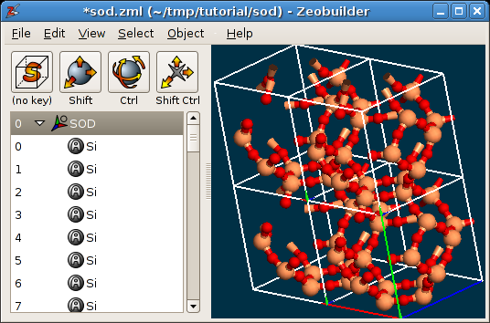

4.6. Periodic models¶
4.6.1. Visualization¶
Load the example file sod.zml. This file contains
a model of the Sodalite unit cell. Rotate the model to get a better view on the
structure. The Zeobuilder window should look like this figure:
A periodic model in Zeobuilder.
By default, Zeobuilder draws the unit cell as a white wire-framed box. Three ridges of this box are drawn in red, green and blue. They correspond the a, b and c cell vectors respectively.
Several aspects of the visualization of periodic systems can be configured.
Select the global reference frame and activate Object -> Properties.
In the tab
Markup, one finds the optionClip the unit cell contents. When enabled, the parts that fall out of the periodic boundaries of the model, will be clipped and are drawn at the other end of the unit cell. A clipped visualization of the sodalite unit cell is shown below:
A periodic model in Zeobuilder, with clipping.
In the tab
Unit cell, one can modify the number of times a unit cell is repeated in the a, b and c direction. This is only affects the visualization, and not the contents of the model. For example, when one selects an atom, it is highlighted in all periodic images. Any change in the model will also be visible in all periodic images. Effective super cells are discussed below. An example is given in the following figure, where the unit cell is repeated two times along the a and the b direction.A periodic model in Zeobuilder, with cell repetitions.
Now add a box to the model and move it out of the unit cell. The function
Object -> Unit Cell -> Wrap cell contents will translate the box back into the
unit cell. The new position of the box in fractional coordinates is equal to the
old position in fractional coordinates, minus the integer part of the old
fractional coordinates. This means that the new position relative to the central
unit cell is the same as the old position relative to the periodic image in
which the box was originally located. Add a second box and connect both boxes by
a vector. Move both boxes around and observe the behavior of the vector. The
exact position and direction of the vector in the 3D view is determined by the
minimum image convention.
4.6.2. The empty periodic model¶
All information regarding the unit cell and its visualization is stored in the global reference frame object. To create an empty periodic model, take the following steps:
Activate
File -> New.Select the global reference frame.
Activate
Object -> Propertiesand open the tabUnit cell. One can enter the three cell vectors in Cartesian coordinates, the directions in which the system is periodic and the number of repetitions along each periodic directions.Click on the button next to the coordinates of the cell vectors:

The popup menu with the function
Set parameters ....A popup menu appears. Select the last item:
Set parameters .... A popup dialog appears in which one can enter the lengths of the cell vectors and the angles between the cell vectors. Enter some values and clickOK. The following conditions are assumed when transforming these six numbers into cell vectors: The a-vector is parallel to the x-axis. The b vector lies in the x,y-plane and the the y-coordinate of the b-vector is positive. the z-coordinate of the c-vector is positive.Enable the tree check boxes that determine along which directions the model is assumed to be periodic. Click
OK.
One can now use the menu function File -> Import to fill the unit cell with molecules.
4.6.3. Transformation of a periodic model into a cluster¶
In this section, we will transform the Sodalite unit cell sod.zml into a sodaliate cage cluster model. Such a transformation
typically takes two steps:
- Define a region in fractional coordinates that will be retained during the transformation.
- Remove superfluous atoms.
For the first step, it is interesting to make good estimates of the retained region in fractional coordinates. For the sodalite cage, this is done in the following figure:

An estimate of the region to be retained when transforming the periodic model into a cluster model.
Proceed along the following steps:
- Select the global reference frame.
- Activate the menu function
Object -> Unit cell -> To cluster. - Enter these fractional coordinates:
a.min=-0.25,a.max=1.25,b.min=-0.25,b.max=1.25,c.min=-0.25,c.max=1.25. ClickOK. - Select and delete all atoms that are not part of the Sodalite cage. Use the
Deletekey on your keyboard and rotate the model to verify that no spurious atoms are left. Keep the oxygen atoms that terminate the cluster. - When done, one might want to continue working with the structure in its
center of mass frame. This is simply accomplished by selecting the global
reference frame and activating the menu function
Object -> Transform -> Center of mass frame.
The end result should be as follows:
The sodalite cage.
4.6.4. Transformation of a cluster model into a periodic one¶
Continue with the cluster from the previous section or download the sodalite
cage cluster model:
sod_cage.zml.
In this section, we will
transform this model into the unit cell of Zeolite A. It is critical that you
recognize the six (equivalent) 4T-rings in the sodalite cage. Take the following
steps:}}
- Identify the two 4T-rings that are centered on the X-axis. Select a
terminating oxygen atom from one ring and add a terminating oxygen atom from
the other 4T-ring to the selection that has the same Y and Z coordinates, but
an opposite X coordinate. Activate the menu function
Object -> Connect -> Arrow. Do the same for the 4T rings centered on the Y-axis and the Z-axis. The result is a set of three orthogonal arrows. - Select the three arrows and activate the menu function
Object -> Unit cell -> Define cell vector(s). - The current model contains overlapping oxygen atoms. Select the global
reference frame and activate
Object -> Molecular -> Merge overlapping atoms.
It is clear that the resulting unit cell has the topology of Zeolite A, but the geometry of the structure and the size of the unit cell is not yet optimal. A relaxation of the structure with a NpT Molecular Dynamics simulation is the most reliable technique to optimize both the geometry and the cell size. (One could also use simulated annealing.)
4.6.5. The super cell¶
A super cell is a unit cell that is duplicated (or mutliplied) along one or more
crystal directions. Super cells in Zeobuilder are created with the menu function
Object -> Unit cell -> Super cell. Try to make a 2x2x2 supercell of the
standard sodalite unit cell (sod.zml).
4.6.6. Unit cell reduction¶
The smallest cubic unit cell of the Faujasite structure contains 192 T-atoms. However, the smallest unit cell of Faujasite is not cubic, contains only 48 T-atoms, and is hence more attractive from the computational point of view. In this section we will describe how the cubic faujasite model can be transformed into the non-cubic variant:
Load the model
fau.zml. It contains the cubic model.For the sake of clarity, remove all the bonds from the model. (Select the bonds in the tree view and hit the
Deletekey on your keyboard.)Transform the unit cell into a cluster model with
Object -> Unit cell -> To clusterand only retain the central unit cell, i.ea.min=0.0,a.max=1.0,b.min=0.0,b.max= 1.0,c.min=0.0,c.max=1.0. ClickOK.Define the new unit cell vectors of the reduced cell by connecting the appropriate atom pairs by arrows. The arrows are shown in the figure below:

The new unit cell vectors for the reduced Faujasite unit cell.
Each arrow connects equivalent atoms in next-nearest-neighbor sodalite cages.
Select the three vectors.
Activate the menu function
Object -> Unit cell -> Define cell vector(s).Zeobuilder wraps all the atoms that fall outside of the unit cell back into the cell volume, which results in many (exactly) coinciding atoms. To remove them, first select the global reference frame and activate
Object -> Molecular -> Merge overlapping atoms.The labels of the atoms are all of the form
Single X. Select the global reference frame and activate the functionObject -> Molecular -> Rearrange atoms. This function resets the atom labels and sorts the atoms.Add bonds to the model.
The final result is shown in the figure below:
The reduced Faujacite unit cell.